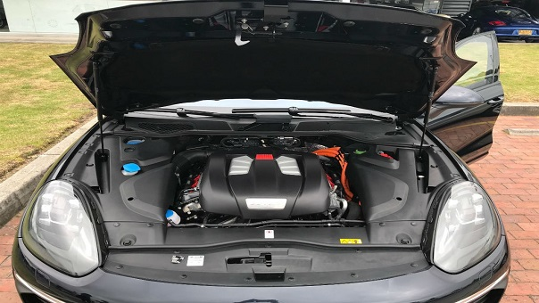

ASÍ SE SIENTE CONDUCIR UN VEHÍCULO HÍBRIDO

Disminuir la emisión de contaminación, esa es la idea de las empresas de cara al cambio climático en la actualidad. Reducir el consumo del combustible, por ejemplo, es una de las cartas más fuertes por la que están apostando. Por ejemplo, Francia anunció que no tendrá más autos a gasolina en 2040. Sin embargo, no solo los gobiernos han comenzado la transformación. Porsche, la empresa de autos de alta gama, le ha apostado a una nueva tecnología: autos híbridos enchufables E-Hybrid con su representante Cayenne SE Hybrid. Tuvimos la oportunidad de probar este auto y conocer más sobre esta tecnología amigable con el ambiente y con los usuarios.
E-Hybrid es la nueva tecnología que ha llegado para quedarse en el mercado de los vehículos. Reúne un vehículo que funciona con gasolina y electricidad. Es decir, tiene la posibilidad, según el usuario lo requiera, de impulsar el vehículo con su batería, motor a gasolina o con ambos al mismo tiempo. Pero la diferencia no solo radica en el consumo de combustible, sino en la experiencia al volante.
Un vehículo puede ser cómodo por varios factores. En un inicio podemos referenciar la comodidad con el tamaño, la cojinería interior y el diseño de sus sillas. Pero para quien va tras el volante hay otros factores importantes. Desde el momento en que se enciende, el vehículo híbrido no emite ningún sonido. Además, la vibración en el volante y en los pedales es completamente nula. Esto, a diferencia de un vehículo a gasolina como un Carrera 911, el sonido de encendido es bastante fuerte, acompañado de una leve vibración en los controles internos de la cabina.
El tablero de revoluciones de los E-Hybrid se mantienen en cero cuando van con solo electricidad.
Todos los vehículos de la línea son automáticos y aquí también hay otro factor de comodidad. En un automático a gasolina, diesel, acpm y demás, es necesario mantener presionado el freno para que no siga rodando. En otros casos hay que cambiar la caja a neutro o parqueo para que no se ruede. Pero en el caso de Porsche, solo es necesario frenar totalmente y una vez detenido, el vehículo no sigue rodando.